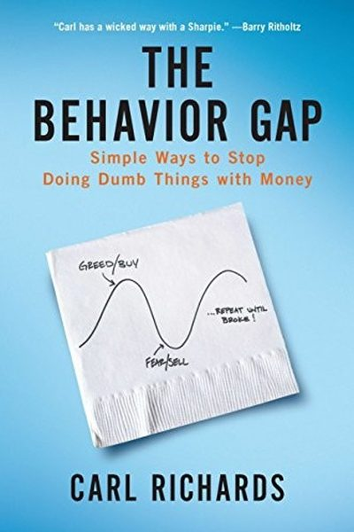

Library › Money & Finance
The Behavior Gap — Summary & Key Lessons

Simple ways to stop doing dumb things with money — the gap between what we should do and what we do.
📖 OPEN THE FULL INTERACTIVE BREAKDOWN →🌐 Read it in Hindi, Hinglish, Gujarati, Tamil & 22 more languages — free, with audio.
💡 The Big Idea
Financial planner Carl Richards' central insight: the 'behavior gap' is the difference between what's rational with money and what we actually do — buying high, selling low, checking too often, chasing fads. His antidote is simplicity: an honest plan you can actually follow, automation to remove temptation, and a deep understanding that the market's ups and downs are the price of admission, not a reason to react. A boring plan you stick to beats a brilliant plan you abandon.
🧠 The 6 Key Lessons
Lesson 1: The Behavior Gap: You Are the Risk
The Behavior Gap
The gap between smart investing and real behavior is enormous — and it's where most money is lost. Investors systematically buy after prices rise and sell after they fall. The gap isn't a knowledge problem; it's an emotion problem. Recognizing it is the first and most important step.
📖 Example: Studies consistently show the average investor earns far less than the funds they own — because they trade at the wrong times. The fund was fine; the behavior wasn't. Richards' core example: the investor who sold everything in March 2020 and bought back in… Read the full example →
⚡ Do this: Review your last three money decisions. Ask: was each driven by a plan or by a feeling? Log the pattern.
Lesson 2: Write Down Your Plan
The Plan
An unwritten plan is a wish. Richards insists on a one-page written financial plan: your goals, your allocation, your rules ('I will not sell because of news', 'I check quarterly'). The written plan is your anchor when emotions spike — you follow the plan, not the panic.
📖 Example: Richards asks clients to write their plan by hand — the act of writing it makes it real, and they can reread it during market drops instead of making calls from fear. Richards makes every client write a one-page investment plan — goals, allocation, rules —… Read the full example →
⚡ Do this: Write your one-page money plan today: goals, allocation, and 3 rules you'll follow when the market scares you.
Lesson 3: Automate Everything You Can
The Plan
Automation is the behavior gap's best enemy: automatic investing, automatic bill pay, automatic saving. When decisions are removed, emotions have nothing to grab. The best investors don't have more willpower — they have fewer decisions.
📖 Example: Richards notes that people who automate investing never 'forget' to invest and never 'wait for a better time' — the two biggest behavior-gap triggers. He cites the couple who automated their SIPs and never touched them through two crashes — ending with 40%… Read the full example →
⚡ Do this: Automate one more money decision this week: investing, savings, or bill payments.
Lesson 4: Ignore the Noise
The Market
The financial news cycle is designed to make you act — and acting is usually wrong. Market ups and downs are normal, expected and largely unpredictable. The plan already accounts for them. Richards' advice: check your portfolio rarely, read less market news, and treat crashes as weather, not news.
📖 Example: Investors who checked their portfolio daily earned less and stressed more than those who checked quarterly — same funds, different behavior. Richards himself unsubscribed from all market news apps and found his anxiety dropped within a week — while his… Read the full example →
⚡ Do this: Set a 'check schedule': one quarterly portfolio review. Move the investing apps off your home screen this week.
Lesson 5: Know Your Risk: Sleep at Night Test
Risk
Risk isn't a number on a chart — it's 'will I still follow my plan when this drops 30%?' Choose an allocation you can actually hold in a crash. If you can't sleep at night with your portfolio, the risk is too high — not mathematically, but behaviorally.
📖 Example: Richards' clients who dialed their stocks down to a level they could tolerate held through crashes and recovered; those who over-allocated sold at the bottom. His 'sleep at night test': if a holding keeps you awake, it's too risky regardless of the numbers.… Read the full example →
⚡ Do this: Ask the sleep test: if your portfolio dropped 30% tomorrow, would you hold? If not, lower the risk today.
Lesson 6: Boring Is Beautiful
The Long Run
The most successful financial plans are boring: index funds, automation, quarterly checks, decades. Boring plans survive because they don't require brilliance — they require endurance. Excitement in investing is usually a warning sign.
📖 Example: Richards' own practice: simple, diversified, low-cost portfolios held for decades. The clients who did best were the ones who found the whole thing unremarkable — and never stopped. The book's closing image: a doctor who made average returns for 30 years by… Read the full example →
⚡ Do this: Audit your plan for excitement. If a money decision feels thrilling, slow down — boring is a feature, not a bug.
✅ 5-Step Action Plan
- Log your last three money decisions — plan or feeling?
- Write your one-page financial plan with rules.
- Automate one more money decision this week.
- Set a quarterly check schedule; ignore the daily noise.
- Pass the sleep test — or lower your risk today.
⚠️ When This Doesn't Work
Richards' 'we know what to do but do the opposite' is the most honest finance book ever — and Terra/Luna is its modern proof: thousands of investors understood the risks of algorithmic stablecoins — the books, the blog posts, the warnings were everywhere — and the knowledge didn't stop $40 billion from evaporating, because the behaviour gap is not a knowledge gap. Richards' advice — write a plan, know your numbers, stay disciplined — is exactly what the Terra victims knew and didn't do. The caveat: reading about the behaviour gap is not closing it. The only closure is mechanical — rules, automation and checks that don't depend on your wisdom in the moment.
💀 The Graveyard Proves It
🌕 Terra/Luna — The 'Stable'coin That Erased $60B in a Week. Burn: $60B in days. Read the full case study →
💬 Best Quotes from The Behavior Gap
- “The behavior gap is the difference between what's good for you and what feels good to you.”
- “Risk is what's left over after you think you've thought of everything.”
- “The market goes up and down. Plan for it. Expect it. Ignore it.”
Interactive version: mark lessons as read, listen in your language, share quote cards.